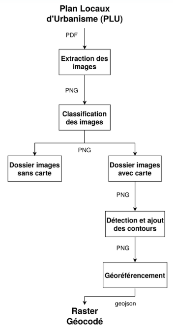
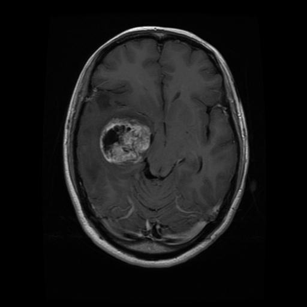
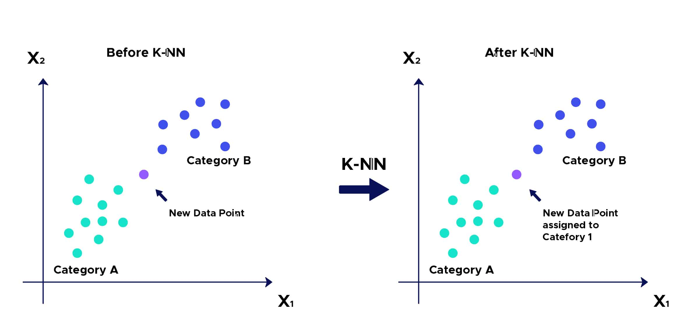
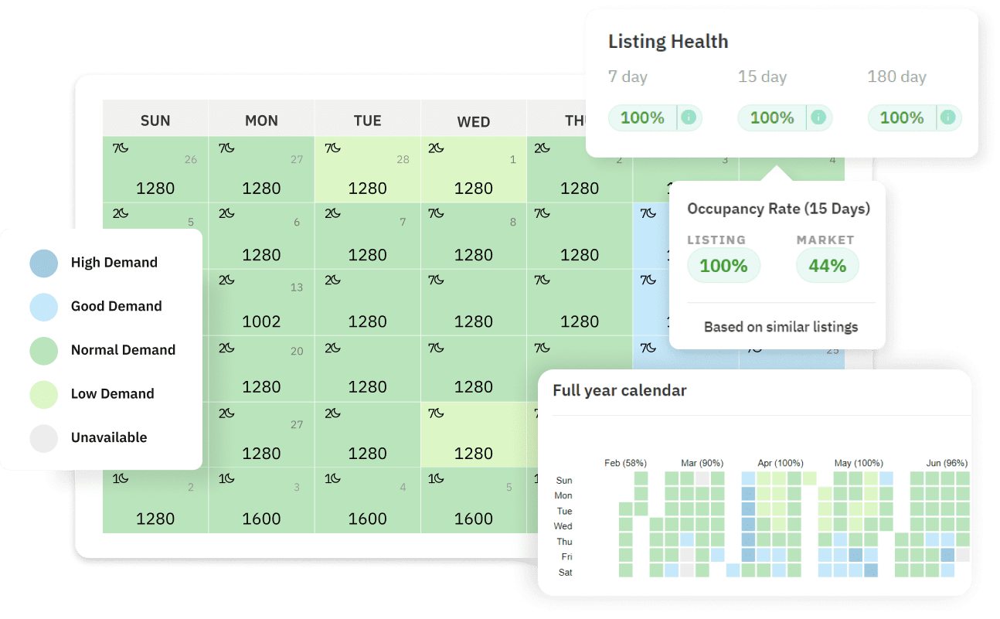

Projet d'extraction d'informations à partir de cartes avec une IA GitHub
Dans un contexte où les prix de l'immobilier, en particulier des terrains constructibles, ont augmenté de manière significative en raison de la stricte réglementation d'utilisation des sols. Les règles sont actuellement déterminées par de nombreuses autorités locales, rendant les informations extrêmement dispersées et non homogènes.

Ce projet de groupe vise à :
- Développer un programme pour géocoder automatiquement les cartes issues des PDF et les convertir en fichiers raster géocodés.
- Extraire les informations pertinentes de ces cartes.
- Évaluer la fiabilité de la méthode et son potentiel pour des mises à jour futures.
Premièrement, nous avons extrait les images des documents PLU récupérées sur le site Geoportail, en utilisant la librairie Python Fitz, ces images contiennent des cartes mais aussi des graphiques, des photos ou encore des documents. Il fallait donc commencer par classifier les cartes.
Ensuite, nous avons crée un dataset d'images de cartes générées avec QGIS et ajouter les images non cartographiques pour augmenter la diversité du dataset.
Enfin, nous avons entrainé un modèle de classification afin de reconnaître les cartes parmi les images extraits des PLU, à partir des architectures VGG16 et ResNet.
Après avoir entrainé le modèle, nous avons obtenu un taux de précision de 99% sur le dataset de test.
Puis, après avoir extrait les cartes, nous avons utilisé la librairie OpenCV pour détecter les contours des cartes et les découper pour ensuite les géocoder avec GDAL.
Détection de tumeur grâce à l'IA
Dans ce projet, l'objectif était de développer une méthode de détection de tumeurs en utilisant des techniques de deep learning appliquées aux images médicales. Le processus s'est déroulé en plusieurs étapes clés :

- Prétraitement des données d'images : Traitement initial des images pour améliorer la qualité des données en vue de l'apprentissage, incluant des ajustements de contraste, de netteté, et des opérations de redimensionnement ou de suppression de bruit.
- Utilisation d’autoencodeurs :Développement et utilisation d'autoencodeurs pour effectuer un premier traitement des images et pour extraire des caractéristiques importantes de manière non supervisée, facilitant la segmentation et la reconnaissance des zones potentiellement tumorales.
- Entraînement d’un modèle de deep learning :Mise en place et entraînement d’un modèle de classification (CNN) pour détecter les tumeurs sur les images prétraitées.
Implémentation de l'algorithme des k plus proches voisins (KNN) en C pour la prédiction de prix sur Airbnb GitHub
L'objectif de ce projet était de prédire le prix des logements Airbnb en utilisant l'algorithme des k plus proches voisins (KNN). Voici les étapes principales du processus :

- Prétraitement des données : Importation des données depuis un fichier CSV pour recueillir des informations sur les logements, comme leur localisation, leur taille, ou leurs équipements.
- Calcul des distances :Pour chaque logement à prédire, les distances avec les autres logements sont calculées en fonction de plusieurs critères (par exemple, distance géographique, nombre de chambres, équipements, etc.). Ces distances permettent d'identifier les logements les plus similaires.

- Tri des voisins :Les logements sont ensuite triés en fonction des distances calculées, afin de sélectionner les k logements les plus proches (les "voisins").
- Calcul de la prédiction :Une fois les k voisins identifiés, la moyenne de leurs prix est calculée pour obtenir une estimation du prix du logement cible.
- Évaluation et validation :Les prédictions sont comparées aux prix réels (si disponibles) pour évaluer la précision du modèle. Des tests sont effectués pour ajuster le choix des critères et des valeurs de k, optimisant ainsi les performances du modèle.
Algorithme A* dans un environnement inconnu simplifié GitHub
Ce projet visait à appliquer l'algorithme A* pour naviguer dans un environnement non exploré, dans le but de trouver le chemin le plus court vers un objectif. Voici les étapes principales :
- Modélisation de l'environnement : Un laser LIDAR a été utilisé pour scanner l’espace et construire progressivement une matrice représentant l'environnement. Cette matrice sert de base à la recherche de chemin en définissant les zones libres et les obstacles.
- Recherche du plus court chemin : L'algorithme A* a été appliqué pour explorer les chemins possibles dans la matrice, en tenant compte des coûts de déplacement et des heuristiques de distance pour identifier le chemin le plus efficace vers la cible.
- Programmation et traversée de graphes : Le système est capable d'ajuster dynamiquement le parcours en fonction des nouvelles informations reçues du LIDAR, modélisé par une fonction dans le programme.
Autres projets
En dehors des travaux précédemment présentés, j'ai également travaillé sur les projets suivants:
- Site de cuisine : Développement d'un site de recette de cuisine from scratch. Projet développé en utilisant les technologies suivantes: HTML, CSS, PHP et JavaScript.- Application Java avec interface graphique Développement du jeu Quoridor en Java, GUI développé avec JavaFX